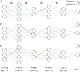
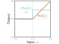

# import library
import numpy as np
def fn(x, beta0, beta1, beta2, beta3, omega0, omega1, omega2, omega3):
return beta3+omega3 * np.cos(beta2 + omega2 * np.exp(beta1 + omega1 * np.sin(beta0 + omega0 * x)))
def loss(x, y, beta0, beta1, beta2, beta3, omega0, omega1, omega2, omega3):
diff = fn(x, beta0, beta1, beta2, beta3, omega0, omega1, omega2, omega3) - y
return diff * diff
beta0 = 1.0; beta1 = 2.0; beta2 = -3.0; beta3 = 0.4
omega0 = 0.1; omega1 = -0.4; omega2 = 2.0; omega3 = 3.0
x = 2.3; y = 2.0
l_i_func = loss(x,y,beta0,beta1,beta2,beta3,omega0,omega1,omega2,omega3)
print('l_i=%3.3f'%l_i_func)Backpropagation
Slides
Problem definitions
\[\begin{eqnarray} \mathbf{h}_{1} &=& \mathbf{a}[\boldsymbol\beta_{0} +\boldsymbol\Omega_{0}\mathbf{x}]\nonumber \\ \mathbf{h}_{2} &=& \mathbf{a}[\boldsymbol\beta_{1} +\boldsymbol\Omega_{1}\mathbf{h}_{1}] \nonumber\\ \mathbf{h}_{3} &=& \mathbf{a}[\boldsymbol\beta_{2} +\boldsymbol\Omega_{2}\mathbf{h}_{2}] \nonumber\\ \mbox{\bf f}[\mathbf{x},\boldsymbol\phi] &=& \boldsymbol\beta_{3} +\boldsymbol\Omega_{3}\mathbf{h}_{3}, \end{eqnarray}\]
\[\begin{eqnarray} L[\boldsymbol\phi]= \sum_{i=1}^{I} \ell_{i}. \end{eqnarray}\]
\[\begin{eqnarray}\label{eq:train2_sgd} \boldsymbol\phi_{t+1}\longleftarrow\boldsymbol\phi_{t} - \alpha \sum_{i\in\mathcal{B}_{t}}\frac{\partial \ell_{i}[\boldsymbol\phi_{t}]}{\partial \boldsymbol\phi}, \end{eqnarray}\]
\[\begin{eqnarray} \frac{\partial \ell_{i}}{\partial\boldsymbol\beta_{k}} \quad\quad \mbox{and} \quad\quad \frac{\partial \ell_{i}}{\partial\boldsymbol\Omega_{k}}, \end{eqnarray}\]
Computing derivatives
Backpropagation forward pass. The goal is to compute the derivatives of the loss ℓ with respect to each of the weights (arrows) and biases (not shown). In other words, we want to know how a small change to each parameter will affect the loss. Each weight multiplies the hidden unit at its source and contributes the result to the hidden unit at its destination. Consequently, the effects of any small change to the weight will be scaled by the activation of the source hidden unit. For example, the blue weight is applied to the second hidden unit at layer 1; if the activation of this unit doubles, then the effect of a small change to the blue weight will double too. Hence, to compute the derivatives of the weights, we need to calculate and store the activations at the hidden layers. This is known as the forward pass since it involves running the network equations sequentially.

Backpropagation backward pass. a) To compute how a change to a weight feeding into layer h3 (blue arrow) changes the loss, we need to know how the hidden unit in h3 changes the model output f and how f changes the loss (orange arrows). b) To compute how a small change to a weight feeding into h2 (blue arrow) changes the loss, we need to know (i) how the hidden unit in h2 changes h3, (ii) how h3 changes f , and (iii) how f changes the loss (orange arrows). c) Similarly, to compute how a small change to a weight feeding into h1 (blue arrow) changes the loss, we need to know how h1 changes h2 and how these changes propagate through to the loss (orange arrows). The backward pass first computes derivatives at the end of the network and then works backward to exploit the inherent redundancy of these computations.
Toy example
\[\begin{eqnarray} \mbox{f}[x,\boldsymbol\phi] = \beta_3+\omega_3\cdot\cos\Bigl[\beta_2+\omega_2\cdot\exp\bigl[\beta_1+\omega_1\cdot\sin[\beta_0+\omega_0\cdot x]\bigr]\Bigr], \end{eqnarray}\]
\[\begin{eqnarray} \ell_i = (\mbox{f}[x_i,\boldsymbol\phi]-y_i)^2, \end{eqnarray}\]
\[\begin{eqnarray} \frac{\partial \ell_i}{\partial \beta_{0}}, \quad \frac{\partial \ell_i}{\partial \omega_0}, \quad \frac{\partial \ell_i}{\partial \beta_{1}}, \quad \frac{\partial \ell_i}{\partial \omega_1}, \quad \frac{\partial \ell_i}{\partial \beta_{2}}, \quad \frac{\partial \ell_i}{\partial \omega_{2}}, \quad \frac{\partial \ell_i}{\partial \beta_{3}}, \quad\mbox{and} \quad \frac{\partial \ell_i}{\partial \omega_{3}}. \end{eqnarray}\]
\[\begin{eqnarray}\label{eq:train2_complicated_deriv} \frac{\partial \ell_i}{\partial \omega_{0}} &=& -2 \left( \beta_3+\omega_3\cdot\cos\Bigl[\beta_2+\omega_2\cdot\exp\bigl[\beta_1+\omega_1\cdot\sin[\beta_0+\omega_0\cdot x_i]\bigr]\Bigr]-y_i\right)\nonumber \\ &&\hspace{0.5cm}\cdot \omega_1\omega_2\omega_3\cdot x_i\cdot\cos[\beta_0+\omega_0 \cdot x_i]\cdot\exp\Bigl[\beta_1 + \omega_1 \cdot \sin[\beta_0+\omega_0\cdot x_i]\Bigr]\nonumber\\ && \hspace{1cm}\cdot \sin\biggl[\beta_2+\omega_2\cdot \exp\Bigl[\beta_1 + \omega_1 \cdot \sin[\beta_0+\omega_0\cdot x_i]\Bigr]\biggr]. \end{eqnarray}\]
Backpropagation forward pass. We compute and store each of the intermediate variables in turn until we finally calculate the loss.
\[\begin{eqnarray} f_{0} &=& \beta_{0} + \omega_{0}\cdot x_i\nonumber\\ h_{1} &=& \sin[f_{0}]\nonumber\\ f_{1} &=& \beta_{1} + \omega_{1}\cdot h_{1}\nonumber\\ h_{2} &=& \exp[f_{1}]\nonumber\\ f_{2} &=& \beta_{2} + \omega_{2} \cdot h_{2}\nonumber\\ h_{3} &=& \cos[f_{2}]\nonumber\\ f_{3} &=& \beta_{3} + \omega_{3}\cdot h_{3}\nonumber\\ \ell_{i} &=& (f_{3}-y_{i})^2. \end{eqnarray}\]
\[\begin{eqnarray} \frac{\partial \ell_i}{\partial f_{3}}, \quad \frac{\partial \ell_i}{\partial h_3}, \quad \frac{\partial \ell_i}{\partial f_2}, \quad \frac{\partial \ell_i}{\partial h_2}, \quad \frac{\partial \ell_i}{\partial f_1}, \quad \frac{\partial \ell_i}{\partial h_1}, \quad\mbox{and} \quad \frac{\partial \ell_i}{\partial f_0}. \end{eqnarray}\]
\[\begin{eqnarray} \frac{\partial \ell_i}{\partial f_{3}} = 2(f_3-y_i). \end{eqnarray}\]
\[\begin{eqnarray} \frac{\partial \ell_i}{\partial h_{3}} =\frac{\partial f_{3}}{\partial h_{3}} \frac{\partial \ell_i}{\partial f_{3}} . \end{eqnarray}\]
Backpropagation backward pass #1. We work backward from the end of the function computing the derivatives ∂ℓi/∂fk and ∂ℓi/∂hk of the loss with respect to the intermediate quantities. Each derivative is computed from the previous one by multiplying by terms of the form ∂fk/∂hk or ∂hk/∂fk−1.
\[\begin{eqnarray} \frac{\partial \ell_i}{\partial f_{2}} &=& \frac{\partial h_{3}}{\partial f_{2}}\left( \frac{\partial f_{3}}{\partial h_{3}}\frac{\partial \ell_i}{\partial f_{3}} \right) \nonumber \\ \frac{\partial \ell_i}{\partial h_{2}} &=& \frac{\partial f_{2}}{\partial h_{2}}\left(\frac{\partial h_{3}}{\partial f_{2}}\frac{\partial f_{3}}{\partial h_{3}}\frac{\partial \ell_i}{\partial f_{3}}\right)\nonumber \\ \frac{\partial \ell_i}{\partial f_{1}} &=& \frac{\partial h_{2}}{\partial f_{1}}\left( \frac{\partial f_{2}}{\partial h_{2}}\frac{\partial h_{3}}{\partial f_{2}}\frac{\partial f_{3}}{\partial h_{3}}\frac{\partial \ell_i}{\partial f_{3}} \right)\nonumber \\ \frac{\partial \ell_i}{\partial h_{1}} &=& \frac{\partial f_{1}}{\partial h_{1}}\left(\frac{\partial h_{2}}{\partial f_{1}} \frac{\partial f_{2}}{\partial h_{2}}\frac{\partial h_{3}}{\partial f_{2}}\frac{\partial f_{3}}{\partial h_{3}}\frac{\partial \ell_i}{\partial f_{3}} \right)\nonumber \\ \frac{\partial \ell_i}{\partial f_{0}} &=& \frac{\partial h_{1}}{\partial f_{0}}\left(\frac{\partial f_{1}}{\partial h_{1}}\frac{\partial h_{2}}{\partial f_{1}} \frac{\partial f_{2}}{\partial h_{2}}\frac{\partial h_{3}}{\partial f_{2}}\frac{\partial f_{3}}{\partial h_{3}}\frac{\partial \ell_i}{\partial f_{3}} \right).\label{eq:train2_simple_chain} \end{eqnarray}\]
\[\begin{eqnarray} \frac{\partial \ell_i}{\partial \beta_{k}} &=& \frac{\partial f_{k}}{\partial \beta_{k}}\frac{\partial \ell_i}{\partial f_{k}}\nonumber \\ \frac{\partial \ell_i}{\partial \omega_{k}} &=& \frac{\partial f_{k}}{\partial \omega_{k}}\frac{\partial \ell_i}{\partial f_{k}}. \end{eqnarray}\]
\[\begin{eqnarray} \frac{\partial f_{k}}{\partial \beta_{k}} = 1 \quad\quad\mbox{and}\quad \quad \frac{\partial f_{k}}{\partial \omega_{k}} &=& h_{k}. \end{eqnarray}\]
Backpropagation backward pass #2. Finally, we compute the derivatives ∂ℓi/∂βk and ∂ℓi/∂ωk. Each derivative is computed by multiplying the term ∂ℓi/∂fk by ∂fk/∂βk or ∂fk/∂ωk as appropriate.
\[\begin{eqnarray} \frac{\partial f_{0}}{\partial \beta_{0}} = 1 \quad\quad\mbox{and}\quad \quad \frac{\partial f_{0}}{\partial \omega_{0}} &=& x_{i}. \end{eqnarray}\]
Backpropagation algorithm
Forward Pass
\[\begin{eqnarray} \mathbf{f}_{0} &=& \boldsymbol\beta_{0} +\boldsymbol\Omega_{0}\mathbf{x}_i\nonumber \\ \mathbf{h}_{1} &=& \mathbf{a}[\mathbf{f}_{0}]\nonumber \\ \mathbf{f}_{1} &=& \boldsymbol\beta_{1} +\boldsymbol\Omega_{1}\mathbf{h}_{1}\nonumber \\ \mathbf{h}_{2} &=& \mathbf{a}[\mathbf{f}_{1}]\nonumber \\ \mathbf{f}_{2} &=& \boldsymbol\beta_{2} +\boldsymbol\Omega_{2}\mathbf{h}_{2}\nonumber \\ \mathbf{h}_{3} &=& \mathbf{a}[\mathbf{f}_{2}]\nonumber \\ \mathbf{f}_{3}&=& \boldsymbol\beta_{3} +\boldsymbol\Omega_{3}\mathbf{h}_{3}\nonumber \\ \ell_{i} &=& \mbox{l}[\mathbf{f}_{3},y_{i}], \end{eqnarray}\]

Derivative of rectified linear unit. The rectified linear unit (orange curve) returns zero when the input is less than zero and returns the input otherwise. Its derivative (cyan curve) returns zero when the input is less than zero (since the slope here is zero) and one when the input is greater than zero (since the slope here is one).
Backward Pass # 1
\[\begin{eqnarray}\label{eq:train2_backward1} \frac{\partial \ell_{i}}{\partial \mathbf{f}_{2}}=\frac{\partial \mathbf{h}_{3}}{\partial \mathbf{f}_{2}}\frac{\partial \mathbf{f}_3}{\partial \mathbf{h}_{3}} \frac{\partial \ell_{i}}{\partial \mathbf{f}_3}. \end{eqnarray}\]
\[\begin{eqnarray}\label{eq:train2_backward2} \frac{\partial \ell_{i}}{\partial \mathbf{f}_{1}}&=& \frac{\partial \mathbf{h}_{2}}{\partial \mathbf{f}_{1}}\frac{\partial \mathbf{f}_{2}}{\partial \mathbf{h}_{2}} \left(\frac{\partial \mathbf{h}_{3}}{\partial \mathbf{f}_{2}}\frac{\partial \mathbf{f}_3}{\partial \mathbf{h}_{3}} \frac{\partial \ell_{i}}{\partial \mathbf{f}_3}\right) \\ \frac{\partial \ell_{i}}{\partial \mathbf{f}_{0}}&=&\frac{\partial \mathbf{h}_{1}}{\partial \mathbf{f}_{0}}\frac{\partial \mathbf{f}_{1}}{\partial \mathbf{h}_{1}}\left(\frac{\partial \mathbf{h}_{2}}{\partial \mathbf{f}_{1}}\frac{\partial \mathbf{f}_{2}}{\partial \mathbf{h}_{2}} \frac{\partial \mathbf{h}_{3}}{\partial \mathbf{f}_{2}}\frac{\partial \mathbf{f}_3}{\partial \mathbf{h}_{3}} \frac{\partial \ell_{i}}{\partial \mathbf{f}_3}\right).\label{eq:train2_backward2a} \end{eqnarray}\]
\[\begin{eqnarray} \frac{\partial \mathbf{f}_3}{\partial \mathbf{h}_{3}} = \frac{\partial}{\partial \mathbf{h}_{3}}\left(\boldsymbol\beta_{3} +\boldsymbol\Omega_{3}\mathbf{h}_{3}\right) = \boldsymbol\Omega_{3}^{T}. \end{eqnarray}\]
Backward Pass # 2
\[\begin{eqnarray} \frac{\partial \ell_{i}}{\partial \boldsymbol\beta_k} &=& \frac{\partial \mathbf{f}_{k}}{\partial \boldsymbol\beta_k} \frac{\partial \ell_{i}}{\partial \mathbf{f}_{k}} \nonumber\\ &=& \frac{\partial}{\partial \boldsymbol\beta_k}\left(\boldsymbol\beta_{k} +\boldsymbol\Omega_{k}\mathbf{h}_{k}\right) \frac{\partial \ell_{i}}{\partial \mathbf{f}_{k}} \nonumber \\ &=& \frac{\partial \ell_{i}}{\partial \mathbf{f}_{k}}, \end{eqnarray}\]
\[\begin{eqnarray} \frac{\partial \ell_{i}}{\partial \boldsymbol\Omega_k} &=& \frac{\partial \mathbf{f}_{k}}{\partial \boldsymbol\Omega_k} \frac{\partial \ell_{i}}{\partial \mathbf{f}_{k}} \nonumber\\ &=& \frac{\partial}{\partial \boldsymbol\Omega_k}\left(\boldsymbol\beta_{k} +\boldsymbol\Omega_{k}\mathbf{h}_{k}\right) \frac{\partial \ell_{i}}{\partial \mathbf{f}_{k}} \nonumber \\ &=& \frac{\partial \ell_{i}}{\partial \mathbf{f}_{k}}\mathbf{h}_k^{T}. \end{eqnarray}\]
Backpropagation algorithm summary
Forward Pass
\[\begin{eqnarray} \mathbf{f}_{0} &=& \boldsymbol\beta_{0} +\boldsymbol\Omega_{0}\mathbf{x}_i\nonumber \\ \mathbf{h}_{k} &=& \mathbf{a}[\mathbf{f}_{k-1}]\hspace{2.76cm} k\in\{1,2,\ldots, K\}\nonumber \\ \mathbf{f}_{k} &=& \boldsymbol\beta_{k} +\boldsymbol\Omega_{k}\mathbf{h}_{k}.\hspace{2cm} k\in\{1,2,\ldots, K\} \end{eqnarray}\]
Backward Pass
\[\begin{eqnarray}\label{eq:train2_bp_backward_summary} \frac{\partial \ell_{i}}{\partial \boldsymbol\beta_k} &=& \frac{\partial \ell_{i}}{\partial \mathbf{f}_k} \hspace{4.1cm} k\in\{K,K-1,\ldots, 1\}\nonumber\\ \frac{\partial \ell_{i}}{\partial \boldsymbol\Omega_k} &=& \frac{\partial \ell_{i}}{\partial \mathbf{f}_k}\mathbf{h}_{k}^{T}\hspace{3.65cm} k\in\{K,K-1,\ldots, 1\}\nonumber\\ \frac{\partial \ell_{i}}{\partial \mathbf{f}_{k-1}} &=& \mathbb{I}[\mathbf{f}_{k-1}>0]\odot \left(\boldsymbol\Omega_{k}^{T}\frac{\partial \ell_{i}}{\partial \mathbf{f}_{k}}\right),\hspace{0.82cm} k\in\{K,K-1,\ldots, 1\} \end{eqnarray}\]
\[\begin{eqnarray} \frac{\partial \ell_{i}}{\partial \boldsymbol\beta_0} &=& \frac{\partial \ell_{i}}{\partial \mathbf{f}_0} \nonumber\\ \frac{\partial \ell_{i}}{\partial \boldsymbol\Omega_0} &=& \frac{\partial \ell_{i}}{\partial \mathbf{f}_0}\mathbf{x}_{i}^{T}. \end{eqnarray}\]
Algorithmic differentiation
Extension to arbitrary computational graphs
dldbeta3_func = 2 * (beta3 +omega3 * np.cos(beta2 + omega2 * np.exp(beta1+omega1 * np.sin(beta0+omega0 * x)))-y)
dldomega0_func = -2 *(beta3 +omega3 * np.cos(beta2 + omega2 * np.exp(beta1+omega1 * np.sin(beta0+omega0 * x)))-y) * \
omega1 * omega2 * omega3 * x * np.cos(beta0 + omega0 * x) * np.exp(beta1 +omega1 * np.sin(beta0 + omega0 * x)) *\
np.sin(beta2 + omega2 * np.exp(beta1+ omega1* np.sin(beta0+omega0 * x)))dldomega0_fd = (loss(x,y,beta0,beta1,beta2,beta3,omega0+0.00001,omega1,omega2,omega3)-loss(x,y,beta0,beta1,beta2,beta3,omega0,omega1,omega2,omega3))/0.00001
print('dydomega0: Function value = %3.3f, Finite difference value = %3.3f'%(dldomega0_func,dldomega0_fd))# TODO compute all the f_k and h_k terms
# Replace the code below
f0 = 0
h1 = 0
f1 = 0
h2 = 0
f2 = 0
h3 = 0
f3 = 0
l_i = 0# Let's check we got that right:
print("f0: true value = %3.3f, your value = %3.3f"%(1.230, f0))
print("h1: true value = %3.3f, your value = %3.3f"%(0.942, h1))
print("f1: true value = %3.3f, your value = %3.3f"%(1.623, f1))
print("h2: true value = %3.3f, your value = %3.3f"%(5.068, h2))
print("f2: true value = %3.3f, your value = %3.3f"%(7.137, f2))
print("h3: true value = %3.3f, your value = %3.3f"%(0.657, h3))
print("f3: true value = %3.3f, your value = %3.3f"%(2.372, f3))
print("l_i original = %3.3f, l_i from forward pass = %3.3f"%(l_i_func, l_i))# TODO -- Compute the derivatives of the output with respect
# to the intermediate computations h_k and f_k (i.e, run the backward pass)
# I've done the first two for you. You replace the code below:
dldf3 = 2* (f3 - y)
dldh3 = omega3 * dldf3
# Replace the code below
dldf2 = 1
dldh2 = 1
dldf1 = 1
dldh1 = 1
dldf0 = 1
# Let's check we got that right
print("dldf3: true value = %3.3f, your value = %3.3f"%(0.745, dldf3))
print("dldh3: true value = %3.3f, your value = %3.3f"%(2.234, dldh3))
print("dldf2: true value = %3.3f, your value = %3.3f"%(-1.683, dldf2))
print("dldh2: true value = %3.3f, your value = %3.3f"%(-3.366, dldh2))
print("dldf1: true value = %3.3f, your value = %3.3f"%(-17.060, dldf1))
print("dldh1: true value = %3.3f, your value = %3.3f"%(6.824, dldh1))
print("dldf0: true value = %3.3f, your value = %3.3f"%(2.281, dldf0))# TODO -- Calculate the final derivatives with respect to the beta and omega terms
dldbeta3 = 1
dldomega3 = 1
dldbeta2 = 1
dldomega2 = 1
dldbeta1 = 1
dldomega1 = 1
dldbeta0 = 1
dldomega0 = 1
# Let's check we got them right
print('dldbeta3: Your value = %3.3f, True value = %3.3f'%(dldbeta3, 0.745))
print('dldomega3: Your value = %3.3f, True value = %3.3f'%(dldomega3, 0.489))
print('dldbeta2: Your value = %3.3f, True value = %3.3f'%(dldbeta2, -1.683))
print('dldomega2: Your value = %3.3f, True value = %3.3f'%(dldomega2, -8.530))
print('dldbeta1: Your value = %3.3f, True value = %3.3f'%(dldbeta1, -17.060))
print('dldomega1: Your value = %3.3f, True value = %3.3f'%(dldomega1, -16.079))
print('dldbeta0: Your value = %3.3f, True value = %3.3f'%(dldbeta0, 2.281))
print('dldomega0: Your value = %3.3f, Function value = %3.3f, Finite difference value = %3.3f'%(dldomega0, dldomega0_func, dldomega0_fd))